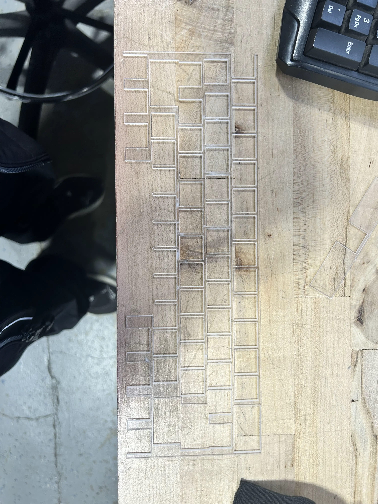
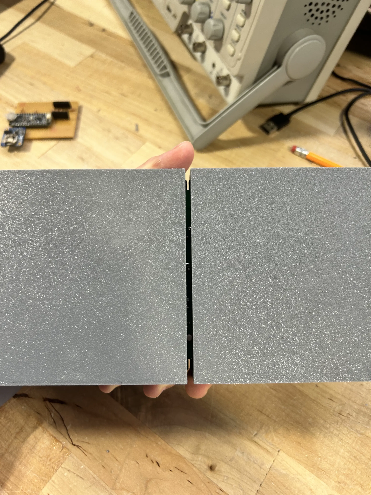
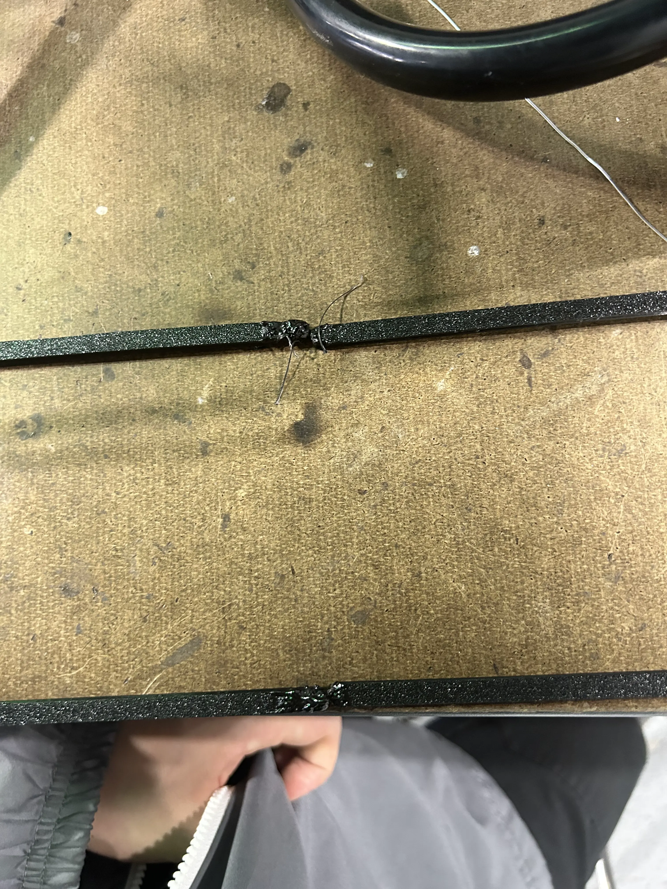
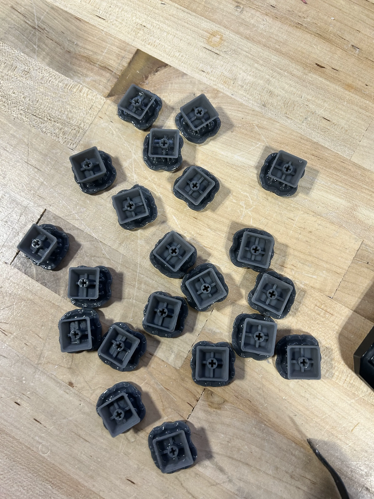
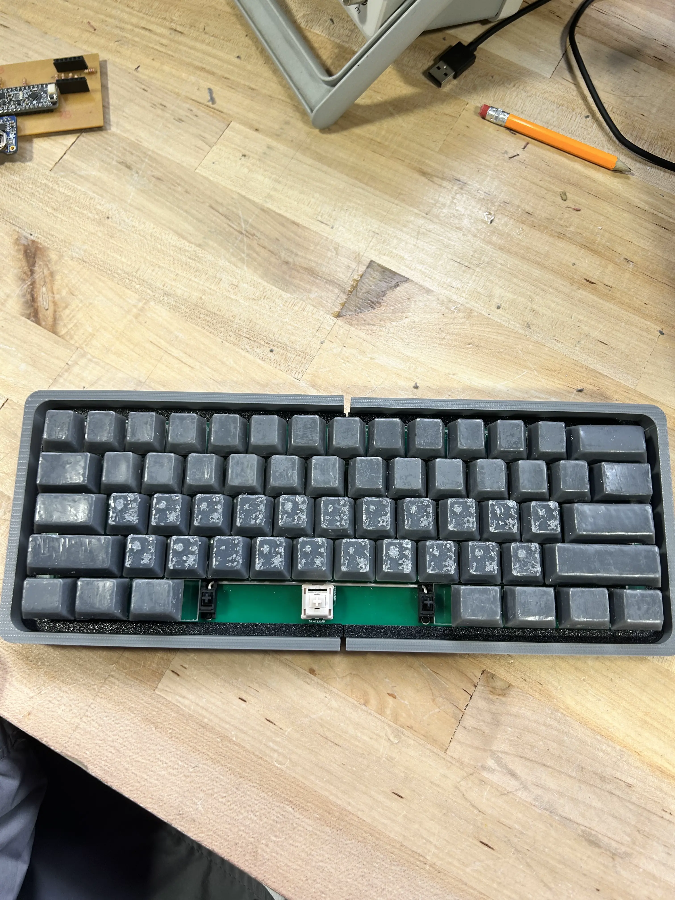

junior week mar. 26, 2026
keyboard updates
started with fixing the polycarbonate plate


before vs after snipping the spacebar area
cut off the area in the spacebar becuase it was conflicting with the stabilizer. grabbed some flush cutters and just snipped it off with barely any resistance
printed out part of the friction fit pad, testing with a cube first
it ended up not working, as it was too brittle and couldn't be picked off the bed easily. even if so, it was way too soft, and probably couldn't work
mr.l ended up printing the two parts using a thicker tpu, but it also ended up not working because i couldn't easily press it into the case from the top, which was what i was trying to do

this led to the case looking like this, which is slightly sub-optimal
because i now had two pieces of tpu, i decided to try and fuse them with heat, which i would have to do anyways.
didn't really work, kinda ended up just creating huge globs and not sticking together. might try again

printed the rest of the keycaps as well, which got really poorly messed up this time

after removing the supports, i noticed that the keys look really bad

"current" progress
as you can see, they look like shit, so i grabbed a knife and scraped off as much as i could before sanding and then painting them with resin
currently being cured along with a spacebar that should hopefully work.
next week, i'm going to change how i approach the friction pad. when i finally get it working, i can actually starting machining the case out of alumninum.
still need to figure out a way to fuses two tpu pieces. might just use superglue because this tpu is tougher.
bai.